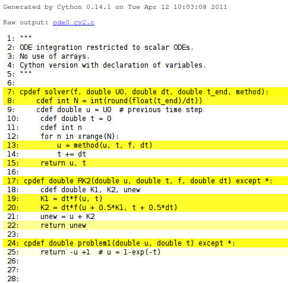

Cython can be viewed as an extension of Python where variables and functions are annotated with extra information, in particular types. The resulting Cython source can be compiled into optimized C or C++ code, and thereby yielding substantial speed-up of slow Python code. Cython is particularly favorable when working with long loops processing large numpy arrays.
Programmers will, as with most effective software development tools, need quite some experience also with Cython before Python code can be quickly extended with Cython syntax and turned into high-performance computing code. The next sections provide a quick hands-on introduction to Cython with emphasis on basic ideas and a number of pitfalls that newcomers are likely to end up with.
Quite some Cython documentation is available, partly at http://docs.cython.org and partly as HTML files in the Doc folder of the Cython source code distribution. If you find yourself using Cython after having seen the capabilities from the forthcoming examples, you are strongly encouraged to read through the existing Cython documentation.
The first example involves a simple numerical method for solving a scalar first-order ordinary differential equation (ODE):
$$ \begin{equation} u'(t) = - u(t) + 1\hbox{ for }t\in (0,T],\quad u(0)=1 \thinspace . \end{equation} $$ The software is created for solving general ODEs on the form
$$ \begin{equation} u'(t) = f(u(t), t)\hbox{ for }t\in (0,T],\quad u(0)=I \thinspace . \end{equation} $$ The user must provide the following input data: \( f(u,t) \), \( I \), \( T \), the time step \( \Delta t \) (dt), and the numerical method for solving the ODE.
The core of the algorithm for solving this problem consists of a time loop where a new value of \( u \) in time are computed from the previous value. The particular method for advancing \( u \) one time step is naturally put in a separate function such that this function can simply be replaced by an alternative function if an alternative method is desired.
def solver(f, I, dt, T, method):
"""
Solve scalar ODE:
u'(t) = f(u,t), u(0)=I, 0 < t <= T
method: numerical method to advance u one time step.
dt: time step length.
"""
N = int(round(float(T)/dt))
u = I
t = 0
for n in xrange(N): # may get memory error for large N
u = method(u, t, f, dt)
t += dt
return u, t
Here is one choice of the method function, using a 2nd-order Runge-Kutta scheme:
Our particular problem can now be solved by defining
def problem1(u, t):
"""Right-hand side function f(u,t) for the ODE u'=-u+1."""
return -u + 1
and calling
u, t = solver(f=problem1, I=1, dt=0.1, T=5, method=RK2)
We collect the solver, RK2, and problem1 functions in a pure Python module file called ode0.py.
A trivial Cython code for the present example is simply to copy ode0.py to a new file with extension .pyx, as Cython files always have this extension. We let the name of this first file, in a series of Cython versions of ode0.py, be ode0_cy1.pyx. The pure Python code in this file is also valid Cython code (at the time of this writing Cython supports almost all of Python). However, before we can execute this Cython code, it needs to be compiled by the cython program, compiled by a C compiler, and linked as a shared library. This shared library is a Python extension module that can be imported in a Python program as any other module.
The easiest way of making an extension module from a .pyx file is to create a setup.py file that will apply the same compiler and flags as were used when compiling Python itself. A typical setup.py file for the present case looks as follows:
from distutils.core import setup
from distutils.extension import Extension
from Cython.Distutils import build_ext
cymodule = 'ode0_cy1'
setup(
name='ODE test',
ext_modules=[Extension(cymodule, [cymodule + '.pyx'],)],
cmdclass={'build_ext': build_ext},
)
The setup.py file is run by
Terminal> python setup.py install build_ext --inplace
The result is a compiled extension module ode0_cy1.so on Linux (with other extensions on other platforms). This module can be imported like any other module,
import ode0_cy1 as ode0
In the rest of the program code we cannot distinguish between the Cython and Python versions of the ode0 module.
We may compare the efficiency of the original Python module ode0 with its Cython-compiled variant by running
Terminal> python ode0_main.py 0 # runs ode0.py in pure Python
Terminal> python ode0_main.py 1 # runs ode0_cy1.py in Cython
Just compiling with Cython halves the CPU time in this example.
The first step in annotating Python code with the extended syntax offered by Cython is to declare (all) variables with their type. Cython supports C-style types like int, double, and ndarray. Moreover, C versions of functions can be called directly from C code by using cdef in the function header line instead of def. With cpdef, two versions of the function are made, one to be called from C and one from Python. The code now reads
cpdef solver(f, double I, double dt, double T, method) except *:
cdef int N = int(round(float(T)/dt))
cdef double u = I # previous time step
cdef double t = 0
cdef int n
for n in xrange(N):
u = method(u, t, f, dt)
t += dt
return u, t
cpdef double RK2(double u, double t, f, double dt) except *:
cdef double K1, K2, unew
K1 = dt*f(u, t)
K2 = dt*f(u + 0.5*K1, t + 0.5*dt)
unew = u + K2
return unew
cpdef double problem1(double u, double t) except *:
return -u +1 # u = 1-exp(-t)
The except * notation enables the functions to raise exceptions. The code will run faster without except *, but strange errors may potentially arise. Annotating variables with their types decreases the CPU time by over 40 percent. The functions above appear in the test program ode0_cy2.pyx.
Running cython -a on a .pyx file results in a .html file with information on what Cython has done with the code. For example, cython -a ode_cy2.pyx results in a file ode0_cy2.html which can be loaded into a web browser and inspected. White lines have resulted in efficient C code, while yellow lines still use the Python API, see Figure 1. One can click on the yellow lines to see the underlying C code. The complete C code is available in ode0_cy2.c.
Figure 1: HTML output explaining what Cython has done with the Python code.

Our code involves two function objects as argument to functions: f for defining the right-hand side of the ODE (the problem) and method for advancing the ODE one time step (the method). When these are ordinary Python function objects, the resulting code is slow. We can easily see this by replacing the calls to f and method by the actual function names problem (in RK2) and RK2 (in solver). The complete code is in ode0_cy3.pyx. The result is a speed-up of a factor of 250!
Nevertheless, we do not want these calls to be hardcoded for a special choice of problem and method. In C one would have applied function pointers for these arguments. An efficient and flexible construction in Cython is to replace the functions by methods in classes. For example, the problem definition goes as follows with a superclass, a method rhs, and a subclass implementing the particular problem in question (see ode0_py4.py):
cdef class Problem:
cpdef double rhs(self, double u, double t) except *:
return 0
cdef class Problem1(Problem):
cpdef double rhs(self, double u, double t) except *:
return -u + 1
Note the use of cdef in the class definition: these are Cython classes with several special features that make them different from standard Python classes, see the chapter Using Cython.
A similar strategy for implementing the RK2 method in terms of classes reads
cdef class ODEMethod:
cpdef double advance(self, double u, double t, Problem p,
double dt) except *:
return 0
cdef class Method_RK2(ODEMethod):
cpdef double advance(self, double u, double t, Problem p,
double dt) except *:
cdef double K1, K2, unew
K1 = dt*p.rhs(u, t)
K2 = dt*p.rhs(u + 0.5*K1, t + 0.5*dt)
unew = u + K2
return unew
We now have to feed our solver method with a Problem1 object's rhs method in as f and a RK2 object's advance method as method. However, we want also this Cython version to behave as the original ode0.py code so that the "main program" in ode0_main.py remains unchanged. This can easily be achieved by defining
RK2 = Method_RK2()
problem1 = Problem1()
problem2 = Problem2()
cpdef solver(Problem f, double I, double dt,
double T, ODEMethod method) except *:
cdef int N = int(round(float(T)/dt))
cdef double u = I # previous time step
cdef double t = 0
cdef int n
for n in xrange(N):
u = method.advance(u, t, f, dt)
t += dt
return u, t
in the Cython source.
The implementation described above doubles the CPU time compared to hardcoding the function names, but we still have a 125-fold reduction of the CPU time of the version where these functions are standard Python objects transferred to functions the standard way.
A natural next step is to remove the except * constructions (see ode0_cy5.pyx), at least after the Cython module is debugged. The removal increases the efficiency by 25 percent. It can also be interesting to run cython -a ode_cy5.pyx and view ode0_cy5.html to see that most of the Python code is now turned into efficient C code.
Our right-hand side function has so far been very simple: \( f(u,t) = -u + 1 \). Changing the problem to involve a standard mathematical function from the math library, e.g., \( f(u,t) = -u + \exp{(-2t)} \), requires a careful implementation in Cython. First, let us try the naive approach with using the standard math Python module (ode_cy6.pyx):
from math import exp
cdef class Problem2(Problem):
cpdef double rhs(self, double u, double t):
return - u + exp(-2*t)
cdef class ODEMethod:
cpdef double advance(self, double u, double t, Problem p,
double dt):
return 0
This little change of the problem increases the CPU time by a factor of 40! The reason is that the potentially efficient rhs function must call the exp function in Python's math module via the Python API.
Fortunately, there are ways to improve the performance. One is to import exp from C's math library (math.h), which is already wrapped by Cython so we can write (ode0_cy7.pyx)
from libc.math cimport exp
Alternatively, if the C's math library had not been made available through Cython, we could have written (ode0_cy8.pyx)
cdef extern from "math.h":
double exp(double)
Both versions brings down the CPU time by a factor of four. Compared to the choice \( f(u,t) = -u + 1 \), the use of exp is 10 times slower. There is nothing to do with this penalty, since we call the fastest available implementation of the exponential function.
For curiosity, using exp from numpy causes a slowdown of the code by a factor of 80 (ode0_cy9.pyx). Another natural test is to use __call__ in classes Problem and ODEMethod instead of method names rhs and advance, to obtain nicer syntax. However, this slows down the code by a factor of 3.
The former implementations does not store the computed values of the unknown function \( u \) in the ODE, which means that we cannot plot or further analyze the solution. Suppose we now want to allocate an array for storing the computed point values in time of the solution. We also introduce an array t specifying all the time points for computation (this array defines then the time steps). The corresponding pure Python implementation is found in the file ode1.py and looks like
import numpy as np
def solver(f, I, t, method):
t = np.asarray(t)
N = len(t)-1
u = np.zeros(N+1)
u[0] = I
for n in range(N):
u[n+1] = method(u, n, t, f)
return u, t
def RK2(u, n, t, f):
dt = t[n+1] - t[n]
K1 = dt*f(u[n], t[n])
K2 = dt*f(u[n] + 0.5*K1, t[n] + 0.5*dt)
unew = u[n] + K2
return unew
def problem1(u, t):
return -u + 1
Note the rewrite of RK2: now we transfer the whole arrays u and t, which makes it simple to implement other multi-step methods, involving multiple time levels of u and t, using the same interface.
We can also just compile this program with Cython to get a very slight performance gain. It is, however, more natural to use the experience from the former sections and (i) declare all variables with types and (ii) represent function arguments to functions by classes and methods as outlined above. The code goes as follows (ode1_cy1.pyx):
import numpy as np
cimport numpy as np
cdef class Problem:
cpdef double rhs(self, double u, double t):
return 0
cdef class Problem1(Problem):
cpdef double rhs(self, double u, double t):
return -u +1 # u = 1-exp(-t)
from math import exp
cdef class Problem2(Problem):
cpdef double rhs(self, double u, double t):
return - u + exp(-2*t)
cdef class ODEMethod:
cpdef double advance(self, np.ndarray u, int n,
np.ndarray t, Problem p):
return 0
cdef class Method_RK2(ODEMethod):
cpdef double advance(self, np.ndarray u, int n,
np.ndarray t, Problem p):
cdef double K1, K2, unew, dt
dt = t[n+1] - t[n]
K1 = dt*p.rhs(u[n], t[n])
K2 = dt*p.rhs(u[n] + 0.5*K1, t[n] + 0.5*dt)
unew = u[n] + K2
return unew
# Create names compatible with ode0.py
RK2 = Method_RK2()
problem1 = Problem1()
problem2 = Problem2()
cpdef solver(Problem f, double I, np.ndarray t, ODEMethod method):
cdef int N = len(t)-1
cdef np.ndarray u = np.zeros(N+1, dtype=np.float)
u[0] = I
cdef int n
for n in range(N):
u[n+1] = method.advance(u, n, t, f)
return u, t
Note the double import of numpy: the standard numpy module and a Cython-enabled version of numpy that ensures fast indexing of and other operations on arrays. Both import statements are necessary in code that uses numpy arrays. The new thing in the code above is declaration of arrays by np.ndarray.
Unfortunately, the performance improvement by the code above is only a factor of 2.5 compared with the pure Python version. The reason is that array indexing is still done in the standard Python way. To obtain efficiency C-style indexing, numpy arrays must be declared with their dimension (rank) and the type of their elements. This is done by the quite comprehensive syntax (ode1_cy2.pyx)
np.ndarray[np.float_t, ndim=1]
The np.float_t data type is a compiled data type defined in Cython's enhanced version of numpy, and ndim=1 means that the array has one dimension (rank 1). An unfortunate side effect of the "buffer" syntax above is that functions with arrays declared this way cannot be declared with cdef or cpdef, they can only use the standard def, which implies that we end up with a pure Python function instead of a C function. However, the code inside this Python function can still be compiled to fast C.
The declaration above reduces the CPU time by a factor of 10, which is a factor of about 25 reduction compared to the pure standard numpy array code.
Since functions taking numpy arrays with "buffer" syntax are forced to be functions handled by the standard Python API, such functions have a significant overhead. Our RK2.advance method takes array arguments and performs operations on two single array elements u[n] and t[n]. We could easily avoid this and instead transfer u[n] and t[n] as double arguments (ode1_cy3.pyx):
cdef class ODEMethod:
cpdef advance(self, double u_1, int n, double t_1,
double dt, Problem p):
return 0
cdef class Method_RK2(ODEMethod):
cpdef advance(self, double u_1, int n, double t_1,
double dt, Problem p):
cdef double K1, K2, unew
K1 = dt*p.rhs(u_1, t_1)
K2 = dt*p.rhs(u_1 + 0.5*K1, t_1 + 0.5*dt)
unew = u_1 + K2
return unew
def solver(Problem f, double I,
np.ndarray[np.float_t, ndim=1] t,
ODEMethod method):
cdef int N = len(t)-1
cdef np.ndarray[np.float_t, ndim=1] u = np.zeros(N+1)
u[0] = I
cdef int n
for n in range(N):
u[n+1] = method.advance(u[n], n, t[n], t[n+1]-t[n], f)
return u, t
A four-fold reduction in CPU time results from this technique of avoiding array arguments. The general rule of thumb is to avoid array arguments in functions that only operates on one or a few array elements. In functions processing large arrays with long loops element the overhead of using the Python C API to parse arguments the standard way will drown in the work done on the (large) arrays, so in such functions there is no efficiency loss by using "buffer" syntax and thereby the "def" declaration of functions.
Additional efficiency can be gained by turning off array bounds checking and the possibility to use negative indices:
@cython.boundscheck(False) # turn off bounds checking for this func.
def solver(Problem f,
double I,
np.ndarray[DT, ndim=1, negative_indices=False] t,
ODEMethod method):
We can also indicate that the arrays have contiguous memory (mode='c'):
@cython.boundscheck(False) # turn off bounds checking for this func.
def solver(Problem f,
double I,
np.ndarray[DT, ndim=1, negative_indices=False,
mode='c'] t,
ODEMethod method):
The efficiency increase is about 5-10 percent (ode1_cy4.pyx). Changing the data type double to np.float_t all over the Cython code has negligible effect in this example (ode1_cy5.pyx).
We also could make a Fortran implementation of the ode1.py code to test what would be considered the fastest possible implementation. The code looks like this (ode1.f):
subroutine solver(f, U0, t, n_t, u, method)
integer n_u0, n_t
real*8 U0, t(0:n_t-1), u(0:n_t-1)
external f, method
integer n
real*8 dt
u(0) = U0
do n = 0, n_t-2
call method(u, n, t, f, n_t)
end do
return
end
subroutine rk2(u, n, t, f, n_t)
integer n, n_t
real*8 u(0:n_t-1), t(0:n_t-1)
real*8 dt, un, dudt, K1, K2
external f
dt = t(n+1) - t(n)
un = u(n)
call f(dudt, un, t(n))
K1 = dt*dudt
un = u(n) + 0.5*K1
call f(dudt, un, t(n) + 0.5*dt)
K2 = dt*dudt
u(n+1) = u(n) + K2
return
end
subroutine problem1(dudt, u, t)
dudt = -u + 1
return
end
subroutine problem2(dudt, u, t)
dudt = -u + exp(-2*t)
return
end
We could have used a Fortran function for f since the result is a scalar, but the more general implementation for systems of ODEs would force us to use subroutines when dudt is an array.
The main program used in the test has the form
program ode2
integer n_U0, n_t, n
real*8 pi
parameter (n_t=8000001)
real*8 u(0:n_t-1), U0, dt, t(0:n_t-1)
real*8 cpu0, cpu1
external problem1, problem2, rk2
U0 = 1.
call cpu_time(cpu0)
dt = 5./(n_t-1)
t(0) = 0
do n = 1, n_t-1
t(n) = t(n-1) + dt
end do
call solver(problem1, U0, t, n_t, u, rk2)
call cpu_time(cpu1)
n = n_t-1
write(*, 1000) 'u(', n, ')=', u(n)
write(*, 2000) 'CPU time:', cpu1-cpu0
1000 format(A, I8, A, F12.4)
2000 format(A, F9.3)
end
Quite surprisingly, this Fortran 77 implementation was almost five times slower than the most efficient Cython version (!). The Fortran code was also compiled with the -O3 flag to gfortran, while setup.py building of Cython modules applies the -O2 optimization that Python itself was built with.
To summarize, Cython increased the performance by a factor of 130+ and was in fact faster than Fortran 77!
Remark. The Fortran program needs to be carefully examined as it is not at all expected to be slower than a Cython implementation.
The previous example codes on using Cython aimed at solving a scalar ODE with one unknown function. The more common case of a system of ODEs, having a vector of functions as unknown, represent quite a discouraging case when it comes to the performance of Cython.
For a system of ODEs, with \( m \) equations and \( m \) unknowns, we must work with arrays of length \( m \), representing the unknowns, the right-hand side of the ODEs, as well as intermediate values in computations. The core of the algorithm must now compute with \( m \) arrays. Here is a typical implementation in Python that works for both scalar ODEs and systems of ODEs ("`ode2.py`" "https://github.com/hplgit/INF5620/blob/gh-pages/src/cyode/ode2.py"):
def solver(f, I, t, method):
t = np.asarray(t)
N = len(t)-1
if isinstance(I, (float,int)):
I = [I] # wrap in list, which then will be array
I = np.asarray(I)
if not isinstance(f(I,0), np.ndarray):
raise TypeError('f (%s) must return numpy array' % f.__name__)
u = np.zeros((N+1, len(I)))
u[0] = I[:]
for n in range(N):
u[n+1] = method(u, n, t, f)
return u, t
def RK2(u, n, t, f):
dt = t[n+1] - t[n]
K1 = dt*f(u[n], t[n])
K2 = dt*f(u[n] + 0.5*K1, t[n] + 0.5*dt)
unew = u[n] + K2
return unew
def problem2(u, t):
r = [u[1], -u[0]]
return np.asarray(r)
Every time the function problem2 is called (and that happens twice at each time level!), a new array must be made from a list. We can avoid this by implementing a class that allocates a numpy array for the right-hand side and reusing this in subsequent calls:
class Problem1:
def __init__(self):
# Allocate an array for dudt for efficiency
self.dudt = np.zeros(2)
def __call__(self, u, t):
self.dudt[0] = u[1]
self.dudt[1] = -u[0]
return self.dudt
This trick reduces the CPU time by a factor of about 1.7.
We can introduce all the performance tricks we have covered so far when Cythonizing the ode2.py code: declare all variables, use "buffer" syntax for arrays (specify data type and rank/dimension, turn off negative indices, indicate contiguous memory), turn off array bounds checking, and use class methods instead of plain functions as arguments to functions. The complete code looks as follows:
import numpy as np
cimport numpy as np
cimport cython
ctypedef np.float64_t DT
cdef class Problem:
cdef np.ndarray dudt
def __init__(self):
self.dudt = np.zeros(2)
def rhs(self,
np.ndarray[DT, ndim=1, negative_indices=False,
mode='c'] u,
double t):
return 0
cdef class Problem1(Problem):
def rhs(self,
np.ndarray[DT, ndim=1, negative_indices=False,
mode='c'] u,
double t):
self.dudt[0] = u[1]
self.dudt[1] = -u[0]
return self.dudt
cdef class ODEMethod:
def advance(self,
np.ndarray[DT, ndim=2, negative_indices=False,
mode='c'] u,
int n,
np.ndarray[DT, ndim=1, negative_indices=False,
mode='c'] t,
Problem p):
return 0
@cython.boundscheck(False)
cdef class Method_RK2(ODEMethod):
def advance(self,
np.ndarray[DT, ndim=2, negative_indices=False,
mode='c'] u,
int n,
np.ndarray[DT, ndim=1, negative_indices=False,
mode='c'] t,
Problem p):
cdef np.ndarray[DT, ndim=1, negative_indices=False,
mode='c'] K1, K2, unew
cdef double dt
cdef np.ndarray[DT, ndim=1, negative_indices=False,
mode='c'] un = u[n,:]
dt = t[n+1] - t[n]
K1 = dt*p.rhs(un, t[n])
K2 = dt*p.rhs(un + 0.5*K1, t[n] + 0.5*dt)
unew = u[n,:] + K2
return unew
# Create names compatible with ode2.py
RK2 = Method_RK2()
problem1 = Problem1()
@cython.boundscheck(False) # turn off bounds checking for this func.
def solver(Problem f, I_, t_, ODEMethod method):
# I_ and t_ can be flexible objects
cdef np.ndarray[DT, ndim=1, negative_indices=False,
mode='c'] t = np.asarray(t_)
N = len(t_)-1
if isinstance(I_, (float,int)):
I_ = [I_] # wrap in list, which then will be array
cdef np.ndarray[DT, ndim=1, negative_indices=False,
mode='c'] I = np.asarray(I_)
if not isinstance(f.rhs(I,0), np.ndarray):
raise TypeError('f (%s) must return numpy array' %
f.__name__)
cdef np.ndarray[DT, ndim=2, negative_indices=False,
mode='c'] u = np.zeros((N+1, len(I)))
u[0,:] = I[:]
for n in range(N):
u[n+1,:] = method.advance(u, n, t, f)
return u, t
Note the way attributes are declared in Cython classes: cdef np.ndarray dudt. Such an attribute is not visible from Python, only from C. Unfortunately, "buffer" syntax of class attributes is not allowed, resulting in slow indexing of these arrays. The efficiency gain by this Cython code is hardly noticeable (15 percent). The reason is that the time is spent on array indexing which is as inefficient as in pure numpy code. Inspecting what Cython has done (cython -a ode2_cy1.pyx) shows that most of the code except variable declarations is yellow and hence not translated to efficient C code.
A Fortran 77 version of the code, in file ode2.f, is about 60 times faster than the Cython version.
It seems that the only way out of the problem is to get rid of arrays and generate problem specific code where the method and the problem is combined. Despite this negative comment regarding Cython code for systems of ODEs, Cython has an enormous potential for solving partial differential equations!